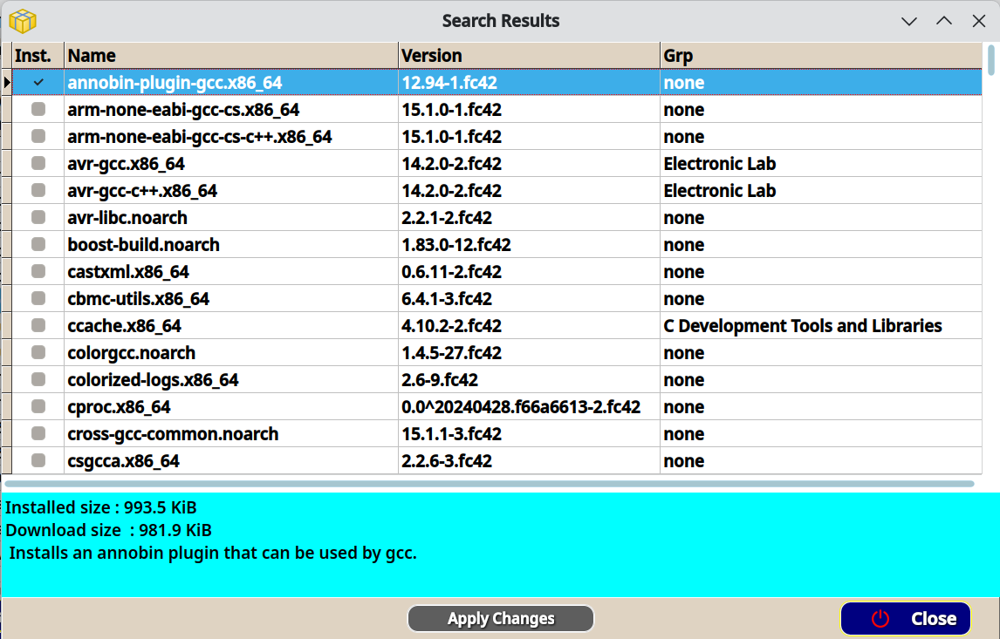

Search for Packages
The search
begins by entering any part of a package name or description of
a package, into the search box just under the main menu.

Let's search for "gcc" and see what we find.

The search will find whole or partial words that
are found in the package names, or in the description of the
packages. The box below the search grid shows the full
description of the selected package, including the download
(compressed) and installed size or the package.
Popup menu
The search result has a popup menu that will allow you to
install, remove, or reinstall the selected package. To show the
popup menu, right click inside the search results.